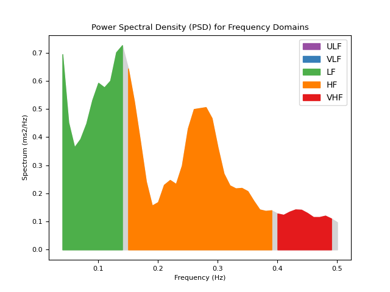
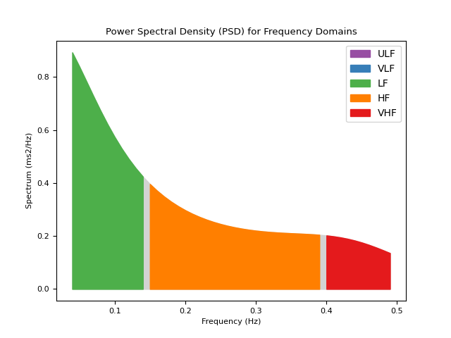
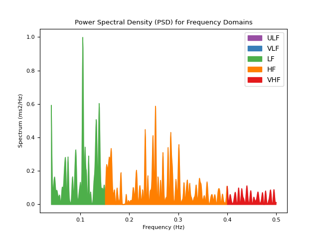
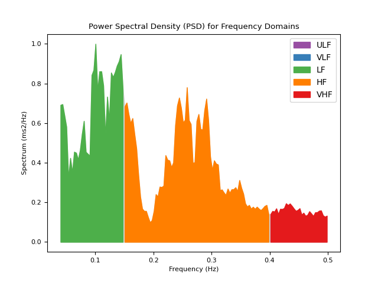
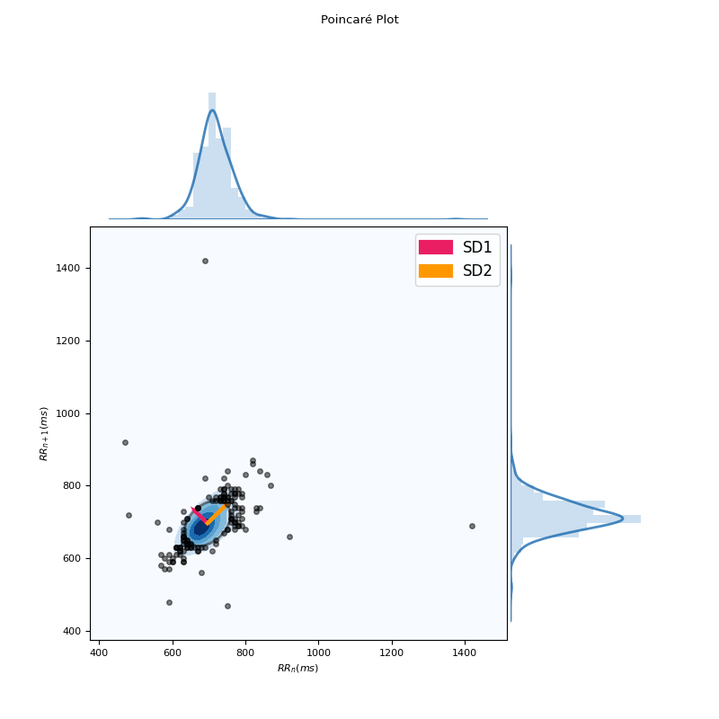

HRV
Contents
HRV#
Main#
hrv()#
- hrv(peaks, sampling_rate=1000, show=False, **kwargs)#
Heart Rate Variability (HRV)
This function computes all HRV indices available in NeuroKit. It is essentially a convenience function that aggregates results from the
time domain,frequency domain, andnon-linear domain.Tip
We strongly recommend checking our open-access paper Pham et al. (2021) on HRV indices for more information.
- Parameters
peaks (dict) – Samples at which R-peaks occur. Can be a list of indices or the output(s) of other functions such as
ecg_peaks(),ppg_peaks(),ecg_process()orbio_process()sampling_rate (int, optional) – Sampling rate (Hz) of the continuous cardiac signal in which the peaks occur. Should be at least twice as high as the highest frequency in vhf. By default 1000.
show (bool, optional) – If
True, returns the plots that are generates for each of the domains.
- Returns
DataFrame – Contains HRV indices in a DataFrame. If RSP data was provided (e.g., output of
bio_process()), RSA indices will also be included.
See also
hrv_time,hrv_frequency,hrv_nonlinear,hrv_rsa,ecg_peaks,ppg_peaksExamples
Example 1: Only using a list of R-peaks locations
In [1]: import neurokit2 as nk # Download data In [2]: data = nk.data("bio_resting_5min_100hz") # Clean signal and Find peaks In [3]: ecg_cleaned = nk.ecg_clean(data["ECG"], sampling_rate=100) In [4]: peaks, info = nk.ecg_peaks(ecg_cleaned, sampling_rate=100, correct_artifacts=True) # Compute HRV indices In [5]: hrv_indices = nk.hrv(peaks, sampling_rate=100, show=True)

In [6]: hrv_indices Out[6]: HRV_MeanNN HRV_SDNN HRV_SDANN1 ... HRV_HFD HRV_KFD HRV_LZC 0 694.756381 49.036043 7.277185 ... 1.917341 2.722348 0.873124 [1 rows x 81 columns]
Example 2: Compute HRV directly from processed data
# Download data In [7]: data = nk.data("bio_resting_5min_100hz") # Process In [8]: signals, info = nk.bio_process(data, sampling_rate=100) # Get HRV In [9]: nk.hrv(signals, sampling_rate=100) Out[9]: HRV_MeanNN HRV_SDNN ... RSA_Gates_Mean_log RSA_Gates_SD 0 694.756381 49.036043 ... 2.046078 0.156442 [1 rows x 89 columns]
References
Pham, T., Lau, Z. J., Chen, S. H. A., & Makowski, D. (2021). Heart Rate Variability in Psychology: A Review of HRV Indices and an Analysis Tutorial. Sensors, 21(12), 3998. https://doi.org/10.3390/s21123998
Stein, P. K. (2002). Assessing heart rate variability from real-world Holter reports. Cardiac electrophysiology review, 6(3), 239-244.
Shaffer, F., & Ginsberg, J. P. (2017). An overview of heart rate variability metrics and norms. Frontiers in public health, 5, 258.
hrv_frequency()#
- hrv_frequency(peaks, sampling_rate=1000, ulf=(0, 0.0033), vlf=(0.0033, 0.04), lf=(0.04, 0.15), hf=(0.15, 0.4), vhf=(0.4, 0.5), psd_method='welch', show=False, silent=True, normalize=True, order_criteria=None, **kwargs)#
Computes frequency-domain indices of Heart Rate Variability (HRV)
Note that a minimum duration of the signal containing the peaks is recommended for some HRV indices to be meaningful. For instance, 1, 2 and 5 minutes of high quality signal are the recommended minima for HF, LF and LF/HF, respectively.
Tip
We strongly recommend checking our open-access paper Pham et al. (2021) on HRV indices for more information.
- Parameters
peaks (dict) – Samples at which cardiac extrema (i.e., R-peaks, systolic peaks) occur. Can be a list of indices or the output(s) of other functions such as ecg_peaks, ppg_peaks, ecg_process or bio_process.
sampling_rate (int, optional) – Sampling rate (Hz) of the continuous cardiac signal in which the peaks occur. Should be at least twice as high as the highest frequency in vhf. By default 1000.
ulf (tuple, optional) – Upper and lower limit of the ultra-low frequency band. By default (0, 0.0033).
vlf (tuple, optional) – Upper and lower limit of the very-low frequency band. By default (0.0033, 0.04).
lf (tuple, optional) – Upper and lower limit of the low frequency band. By default (0.04, 0.15).
hf (tuple, optional) – Upper and lower limit of the high frequency band. By default (0.15, 0.4).
vhf (tuple, optional) – Upper and lower limit of the very-high frequency band. By default (0.4, 0.5).
psd_method (str) – Method used for spectral density estimation. For details see
signal.signal_power(). By default “welch”.silent (bool) – If False, warnings will be printed. Default to True.
show (bool) – If
True, will plot the power in the different frequency bands.normalize (bool) – Normalization of power by maximum PSD value. Default to
True. Normalization allows comparison between different PSD methods.order_criteria (str) – The criteria to automatically select order in parametric PSD (only used for autoregressive (AR) methods such as ‘burg’). Defaults to None.
**kwargs – Additional other arguments.
- Returns
DataFrame – Contains frequency domain HRV metrics:
ULF: The spectral power density pertaining to ultra low frequency band i.e., .0 to . 0033 Hz by default.
VLF: The spectral power density pertaining to very low frequency band i.e., .0033 to . 04 Hz by default.
LF: The spectral power density pertaining to low frequency band i.e., .04 to .15 Hz by default.
HF: The spectral power density pertaining to high frequency band i.e., .15 to .4 Hz by default.
VHF: The variability, or signal power, in very high frequency i.e., .4 to .5 Hz by default.
LFn: The normalized low frequency, obtained by dividing the low frequency power by the total power.
HFn: The normalized high frequency, obtained by dividing the low frequency power by the total power.
LnHF: The log transformed HF.
See also
ecg_peaks,ppg_peaks,hrv_summary,hrv_time,hrv_nonlinearExamples
In [1]: import neurokit2 as nk # Download data In [2]: data = nk.data("bio_resting_5min_100hz") # Find peaks In [3]: peaks, info = nk.ecg_peaks(data["ECG"], sampling_rate=100) # Compute HRV indices using method='welch' In [4]: hrv_welch = nk.hrv_frequency(peaks, sampling_rate=100, show=True, psd_method="welch")
# Using method ='burg' In [5]: hrv_burg = nk.hrv_frequency(peaks, sampling_rate=100, show=True, psd_method="burg")
# Using method = 'lomb' (requires installation of astropy) In [6]: hrv_lomb = nk.hrv_frequency(peaks, sampling_rate=100, show=True, psd_method="lomb")
# Using method='multitapers' In [7]: hrv_multitapers = nk.hrv_frequency(peaks, sampling_rate=100, show=True,psd_method="multitapers")
References
Pham, T., Lau, Z. J., Chen, S. H. A., & Makowski, D. (2021). Heart Rate Variability in Psychology: A Review of HRV Indices and an Analysis Tutorial. Sensors, 21(12), 3998. https://doi.org/10.3390/s21123998
Stein, P. K. (2002). Assessing heart rate variability from real-world Holter reports. Cardiac electrophysiology review, 6(3), 239-244.
Shaffer, F., & Ginsberg, J. P. (2017). An overview of heart rate variability metrics and norms. Frontiers in public health, 5, 258.
Boardman, A., Schlindwein, F. S., & Rocha, A. P. (2002). A study on the optimum order of autoregressive models for heart rate variability. Physiological measurement, 23(2), 325.
Bachler, M. (2017). Spectral Analysis of Unevenly Spaced Data: Models and Application in Heart Rate Variability. Simul. Notes Eur., 27(4), 183-190.
{kind=link}
{kind=link}
{kind=link}
{kind=link}
hrv_nonlinear()#
- hrv_nonlinear(peaks, sampling_rate=1000, show=False, **kwargs)#
Computes nonlinear indices of Heart Rate Variability (HRV)
Non-linear indices include features derived from the Poincaré plot, as well as other
.complexityindices.The Poincaré plot is a graphical representation of each NN interval plotted against its preceding NN interval. The ellipse that emerges is a visual quantification of the correlation between successive NN intervals. Indices derived from the Poincaré plot analysis are: * SD1: Standard deviation perpendicular to the line of identity. It is an index of
short-term RR interval fluctuations, i.e., beat-to-beat variability. It is equivalent (although on another scale) to RMSSD, and therefore it is redundant to report correlations with both.
SD2: Standard deviation along the identity line. Index of long-term HRV changes.
SD1/SD2: ratio of SD1 to SD2. Describes the ratio of short term to long term variations in HRV.
S: Area of ellipse described by SD1 and SD2 (
pi * SD1 * SD2). It is proportional to SD1SD2.CSI: The Cardiac Sympathetic Index (Toichi, 1997) is a measure of cardiac sympathetic function independent of vagal activity, calculated by dividing the longitudinal variability of the Poincaré plot (
4*SD2) by its transverse variability (4*SD1).CVI: The Cardiac Vagal Index (Toichi, 1997) is an index of cardiac parasympathetic function (vagal activity unaffected by sympathetic activity), and is equal equal to the logarithm of the product of longitudinal (
4*SD2) and transverse variability (4*SD1).CSI_Modified: The modified CSI (Jeppesen, 2014) obtained by dividing the square of the longitudinal variability by its transverse variability.
Indices of Heart Rate Asymmetry (HRA), i.e., asymmetry of the Poincaré plot (Yan, 2017), include: * GI: Guzik’s Index, defined as the distance of points above line of identity (LI)
to LI divided by the distance of all points in Poincaré plot to LI except those that are located on LI.
SI: Slope Index, defined as the phase angle of points above LI divided by the phase angle of all points in Poincaré plot except those that are located on LI.
AI: Area Index, defined as the cumulative area of the sectors corresponding to the points that are located above LI divided by the cumulative area of sectors corresponding to all points in the Poincaré plot except those that are located on LI.
PI: Porta’s Index, defined as the number of points below LI divided by the total number of points in Poincaré plot except those that are located on LI.
SD1d and SD1a: short-term variance of contributions of decelerations (prolongations of RR intervals) and accelerations (shortenings of RR intervals), respectively (Piskorski, 2011).
C1d and C1a: the contributions of heart rate decelerations and accelerations
to short-term HRV, respectively (Piskorski, 2011).
SD2d and SD2a: long-term variance of contributions of decelerations (prolongations of RR intervals) and accelerations (shortenings of RR intervals), respectively (Piskorski, 2011).
C2d and C2a: the contributions of heart rate decelerations and accelerations to long-term HRV, respectively (Piskorski, 2011).
SDNNd and SDNNa: total variance of contributions of decelerations (prolongations of RR intervals) and accelerations (shortenings of RR intervals), respectively (Piskorski, 2011).
Cd and Ca: the total contributions of heart rate decelerations and accelerations to HRV.
Indices of Heart Rate Fragmentation (Costa, 2017) include: * PIP: Percentage of inflection points of the RR intervals series. * IALS: Inverse of the average length of the acceleration/deceleration segments. * PSS: Percentage of short segments. * PAS: IPercentage of NN intervals in alternation segments.
Indices of Complexity and Fractal Physiology include: * ApEn: See entropy_approximate(). * SampEn: See entropy_sample(). * ShanEn: See entropy_shannon(). * FuzzyEn: See entropy_fuzzy(). * MSE: See entropy_multiscale(). * CMSE: See entropy_multiscale(). * RCMSE: See entropy_multiscale(). * CD: See fractal_correlation(). * HFD: See fractal_higuchi() (with
kmaxis set to"default"). * KFD: See fractal_katz(). * LZC: See fractal_lempelziv(). * DFA_alpha1: The monofractal detrended fluctuation analysis of the HR signal, correspondingto short-term correlations. See fractal_dfa().
DFA_alpha2: The monofractal detrended fluctuation analysis of the HR signal, corresponding to long-term correlations. See fractal_dfa().
DFA_alpha1_ExpRange: The multifractal detrended fluctuation analysis of the HR signal, corresponding to short-term correlations. ExpRange is the range of singularity exponents, corresponding to the width of the singularity spectrum. See fractal_dfa().
DFA_alpha2_ExpRange: The multifractal detrended fluctuation analysis of the HR signal, corresponding to long-term correlations. See fractal_dfa().
DFA_alpha1_ExpMean: Multifractal DFA. ExpMean is the mean of singularity exponents.
DFA_alpha2_ExpMean: Multifractal DFA. ExpMean is the mean of singularity exponents.
DFA_alpha1_DimRange: Multifractal DFA (short-term correlations). DimRange is the range of singularity dimensions, corresponding to the height of the singularity spectrum.
DFA_alpha2_DimRange: Multifractal DFA (long-term correlations).
DFA_alpha1_DimMean: Multifractal DFA (short-term correlations). Dimmean is the mean of singularity dimensions.
DFA_alpha2_DimMean: Multifractal DFA (long-term correlations). Dimmean is the mean of singularity dimensions.
Other non-linear indices include those based on Recurrence Quantification Analysis (RQA), but are not implemented yet (but soon).
Tip
We strongly recommend checking our open-access paper Pham et al. (2021) on HRV indices, as well as Lau et al. (2021) on complexity, for more information.
- Parameters
peaks (dict) – Samples at which cardiac extrema (i.e., R-peaks, systolic peaks) occur. Can be a list of indices or the output(s) of other functions such as ecg_peaks, ppg_peaks, ecg_process or bio_process.
sampling_rate (int, optional) – Sampling rate (Hz) of the continuous cardiac signal in which the peaks occur. Should be at least twice as high as the highest frequency in vhf. By default 1000.
show (bool, optional) – If True, will return a Poincaré plot, a scattergram, which plots each RR interval against the next successive one. The ellipse centers around the average RR interval. By default False.
**kwargs – Other arguments to be passed into fractal_dfa() and fractal_correlation().
- Returns
DataFrame – Contains non-linear HRV metrics.
See also
ecg_peaks,ppg_peaks,hrv_frequency,hrv_time,hrv_summaryExamples
In [1]: import neurokit2 as nk # Download data In [2]: data = nk.data("bio_resting_5min_100hz") # Find peaks In [3]: peaks, info = nk.ecg_peaks(data["ECG"], sampling_rate=100) # Compute HRV indices In [4]: hrv = nk.hrv_nonlinear(peaks, sampling_rate=100, show=True) In [5]: hrv Out[5]: HRV_SD1 HRV_SD2 HRV_SD1SD2 ... HRV_HFD HRV_KFD HRV_LZC 0 49.341281 72.597435 0.679656 ... 1.921677 1.913071 0.854475 [1 rows x 48 columns]
References
Pham, T., Lau, Z. J., Chen, S. H., & Makowski, D. (2021). Heart Rate Variability in Psychology: A Review of HRV Indices and an Analysis Tutorial. Sensors, 21(12), 3998. https:// doi.org/10.3390/s21123998
Yan, C., Li, P., Ji, L., Yao, L., Karmakar, C., & Liu, C. (2017). Area asymmetry of heart rate variability signal. Biomedical engineering online, 16(1), 112.
Ciccone, A. B., Siedlik, J. A., Wecht, J. M., Deckert, J. A., Nguyen, N. D., & Weir, J. P. (2017). Reminder: RMSSD and SD1 are identical heart rate variability metrics. Muscle & nerve, 56(4), 674-678.
Shaffer, F., & Ginsberg, J. P. (2017). An overview of heart rate variability metrics and norms. Frontiers in public health, 5, 258.
Costa, M. D., Davis, R. B., & Goldberger, A. L. (2017). Heart rate fragmentation: a new approach to the analysis of cardiac interbeat interval dynamics. Front. Physiol. 8, 255.
Jeppesen, J., Beniczky, S., Johansen, P., Sidenius, P., & Fuglsang-Frederiksen, A. (2014). Using Lorenz plot and Cardiac Sympathetic Index of heart rate variability for detecting seizures for patients with epilepsy. In 2014 36th Annual International Conference of the IEEE Engineering in Medicine and Biology Society (pp. 4563-4566). IEEE.
Piskorski, J., & Guzik, P. (2011). Asymmetric properties of long-term and total heart rate variability. Medical & biological engineering & computing, 49(11), 1289-1297.
Stein, P. K. (2002). Assessing heart rate variability from real-world Holter reports. Cardiac electrophysiology review, 6(3), 239-244.
Brennan, M. et al. (2001). Do Existing Measures of Poincaré Plot Geometry Reflect Nonlinear Features of Heart Rate Variability?. IEEE Transactions on Biomedical Engineering, 48(11), 1342-1347.
Toichi, M., Sugiura, T., Murai, T., & Sengoku, A. (1997). A new method of assessing cardiac autonomic function and its comparison with spectral analysis and coefficient of variation of R-R interval. Journal of the autonomic nervous system, 62(1-2), 79-84.
Acharya, R. U., Lim, C. M., & Joseph, P. (2002). Heart rate variability analysis using correlation dimension and detrended fluctuation analysis. Itbm-Rbm, 23(6), 333-339.
{kind=link}